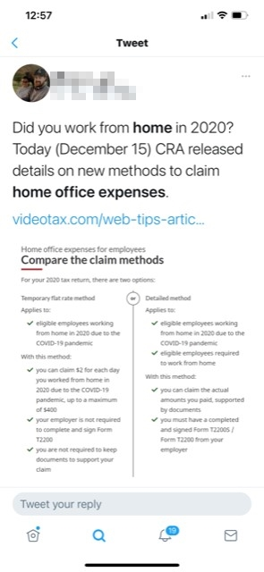

In a round of UX testing for the Canada Emergency Wage Subsidy (CEWS) was done for the checklist to prepare users before starting their calculation, testing showed there were some issues when stacking optional criteria.
When two possible options were displayed, seperated by the word "or", some users would miss the second option and assume the first option was the only criteria.
As seen in the image above, sometimes the bottom point in the "or" option were missed. This was lessened when we stylized the or word with a more visual design.

This design is currently being used in the Home office expenses for employees area of CRA. It has been helpful to better frame differences between two options rather than simply using a grid or stacking the options on top of each other and hope that the user catches the "and", or "or" phrase.
An unexpected occurance was the fact that is was used as a visual aid, similar to an infographic in a tweet when the home office expenses was launched. This adds the benefit of using html design over the need to also provide a more visually pleasing infographic.
New versions of screen reader technology (such as NVDA and JAWS) now reads the content: "" value of CSS. This helps support the user's ability to hear the conjunction without it being coded invisibily.
The push for default use of <ul> with the recent update also users to hear how many "options/parts" or "choices" of the and/or, which provides them with a knowledge of the amounts of options/choices in advance.
Note: it is still important to write the lead in statement/header in a way, to indicate the following conjunction component is a choice/option (or part if using the "and" option), for the rare situations where a user may have CSS turned off (and cannot see the and/or component).